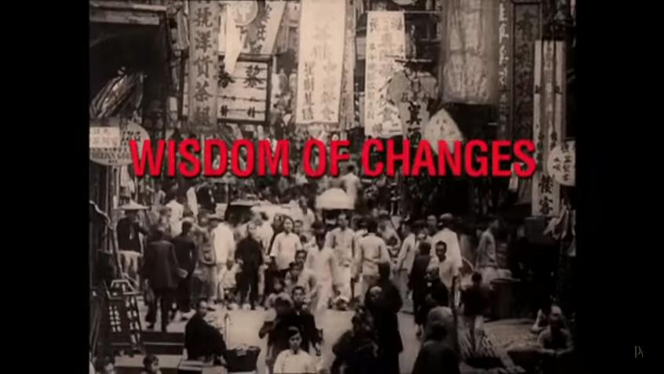

The I Ching or Book of Changes is an ancient Chinese book with a number of existing translations.
The I Ching as translated from the Chinese into German by Richard Wilhelm and rendered into English by Cary F. Baynes (1950) has become a well respected classic. It is available as a printed book by the Bollingen Foundation published by Princeton University Press. The book includes a Foreward by C.G. Jung, the text of the I Ching and additional materials discussing the history, the Trigrams, the underlying principles, and the Commentaries.
This project provides an electronic version of the text related to the hexagrams, as found in the first part of the Wilhelm/Baynes translation, that can be viewed online as html or pdf. The pdf file can also be downloaded for offline use on a mobile phone or ebook reader.
The date when the versions were last modified is shown on the html page and in the pdf file.
This project is available in a public git repository, at https://github.com/clovemedia/i_ching, to allow for corrections and improvements. For discussions go to https://github.com/clovemedia/i_ching/discussions.
It includes an index table similar to that found in the book with the names of the trigrams and their symbolic representations with a hyperlink to the section of the document pertaining to each hexagram.
It also includes the appendix "Consulting the Oracle" as found in the book including "The Yarrow Stalk Oracle" and "The Coin Oracle". The section on moving lines giving rise to a new hexagram is specifically highlighted as it is essential to understanding how to use the oracle.
A new appendix, not found in the book by Wilhelm and Baynes, has been added that explores a mathematical analysis of the yarrow stalk oracle and use of three coins. An alternate method using two coins is described that emulates the probabilities of the yarrow stalk method. Details on this mathematical analysis were found at The I Ching random numbers along with a variety of comments.
Everything you need to know to use the I Ching is in the pdf or on the html page. Just below the Index of Hexagrams is a link to "Consulting the Oracle". Click on that link and look at the three methods: the Yarrow Stalks, the three coins, and the alternate method with two coins. The methods using the coins are easiest. Also look at the section on how moving lines are used to give rise to a new hexagram.
Each turn with the coins or the yarrow stalks will result in a number (6,7,8,9) which is used to create either the yin or yang line and determine if it is a moving line, beginning with the first — the bottom line. Repeat the process to create the next line, placing it above the previous one(s) until there are six forming the hexagram. Any moving lines can be marked with an "X" or an "O" or by placing the number 6 or 9 beside it.
Now return to the index table to look up the hexagram's number and click on the number to go to that section. After reading the first part, the Judgment and Image, if there are any moving lines go to the sections pertaining to each of those lines.
Next, if there are any moving lines change them to the opposite yin or yang line to arrive at the new hexagram. Go to that hexagram and read only the first part, the Judgment and the Image.
In a forum post on the Internet someone notes:
One thing, among a few, that has always bothered me about the Baynes English translation (of Wilhelm's I Ching) was his decision to remove all of the latter's citations of Goethe; and at this late stage in time, I have pretty much given up all hope of ever seeing a new English translation of Wilhelm's German edition, though I believe one is more than warranted.
Yen Hui ( Wilhelm's German Translation of the I Ching)
It would certainly be interesting to see the citations of Goethe that Richard Wilhelm included in his German Translation of the I Ching.
While the I Ching or Book of Changes is an ancient Chinese book that provides wisdom and guidance for all time, some people may find it is not easy for them to relate to it because of the gender references in phrases, such as "the superior man", and references to the roles of men and women as existed in ancient times, and also the gender pronouns used throughout the text.
This raises a thought that if the text is transformed into a gender neutral version it may be better appreciated by more people. However, such an undertaking will no doubt take much effort and consideration. This project may provide for such an effort through a fork of the git repository.
Android users looking for a good, simple pdf viewer app may wish to look at the free open-source app PDF Viewer Plus by GSnathan available at Google Play, apkpure or Microsoft Store.
 The "Wisdom of Changes - Richard Wilhelm and the I Ching" is a documentary film produced by his granddaughter, Bettina Wilhelm, that was released in 2011. Interviews with Bettina Wilhelm, the director, and other individuals involved in producing the documentary can be found on YouTube, Interviews.
The documentary can also be viewed on Youtube, Wisdom Of Changes.